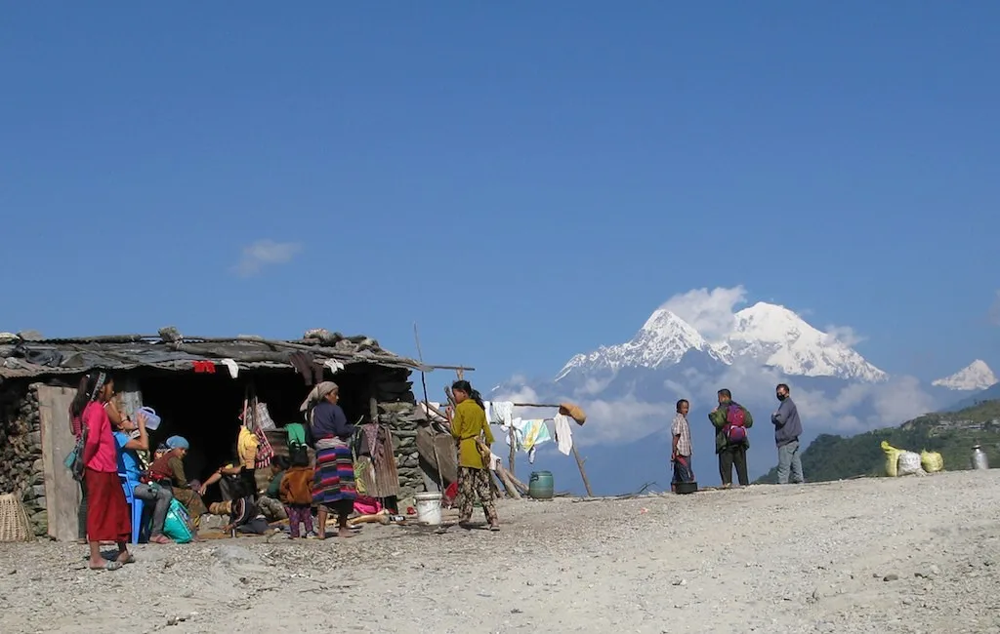
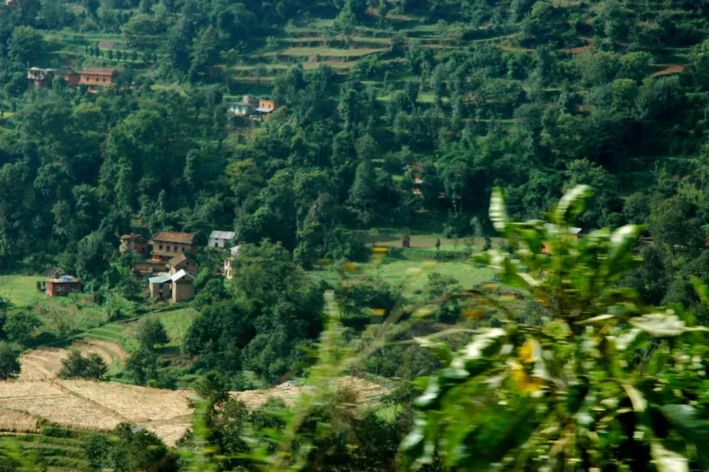

네팔 빙하 붕괴 대홍수…수력발전소 건설현장 한국인 9명 연락두절
네팔 북부 히말라야 지역에서 8월 26일 발생한 대규모 빙하 붕괴와 돌발 홍수로 우리 국민 9명의 소재가 확인되지 않고 있다. 실종자는 라수와 지역에서 '어퍼 트리슐리-1' 수력발전소 건설 현장에 있던 두산에너빌리티 직원 6명과 한국남동발전 직원 3명이다. 정부는 합동 신속대응팀을 현지에 보내 네팔 군·경찰과 함께 수색을 이어가고 있으며, 30일에도 헬기와 드론을 동원한 정밀 수색이 진행됐다.
재난은 26일 오전 히말라야 상층부에서 시작됐다. 해발 7234m 랑탕리룽산의 약 5200m 지점에서 폭 600m가량의 빙하가 암석과 함께 무너져 내렸고, 당시 충격은 규모 5.2 지진에 준하는 수준이었던 것으로 분석됐다. 붕괴 잔해가 네팔·중국 국경 인근 보테코시강과 트리슐리강으로 쏟아지면서 강 수위가 순식간에 8~10m 치솟았고, 하류의 마을과 도로, 다리가 잇따라 휩쓸렸다.

실종된 우리 국민들은 현지에서 수력발전소 건설과 사업 관리를 맡아 왔다. 사고 당시 별도 지역에 고립됐던 두산에너빌리티 직원 등 10명은 네팔 군 헬기로 전원 안전하게 대피해 현재 카트만두에서 휴식을 취하고 있다. 이들은 여권을 포함한 소지품을 대부분 잃어버려 긴급 여권을 발급받은 뒤 귀국할 전망이다. 발전소 시설에 남아 있던 국민 2명도 구조돼 무사가 확인됐다.
정부는 임상우 외교부 재외국민보호·영사 대표를 팀장으로 외교부와 소방청, 경찰청 인력으로 구성된 11명 규모의 1차 신속대응팀을 파견했고, 이어 소방 구조 인력을 중심으로 한 2차 대응팀을 추가로 보냈다. 두산그룹 박정원 회장도 사고 수습을 위해 직접 현지로 이동했다. 대응팀은 네팔 측에 실종자의 예상 이동 경로와 좌표를 전달하며 수색 협조를 요청하고 있다.
이재명 대통령은 27일 수석·보좌관 회의를 취소하고 긴급 점검 회의를 주재해 "국민의 생명과 안전을 지키는 일에는 과잉 대응이란 없다는 각오로 가용 자원을 총동원하라"고 지시했다. 대통령은 외교부와 관계 부처, 현지 대사관, 파견 기업이 네팔 정부와 모든 외교 채널을 가동해 수색·구조 자원을 확보하도록 주문했다. 또 피해 가족을 위한 전담관과 수색 상황을 설명할 공보 담당자를 지정하라고 지시했으며, 여당 의원 오찬 등 다른 일정도 미루면서 상황을 직접 챙겼다.

수색은 쉽지 않은 상황이다. 네팔 당국이 2차 홍수 가능성을 우려해 민간 헬기 운항을 제한한 데다, 사고 지역은 해발이 높고 지형이 험해 접근 자체가 까다롭다. 신속대응팀은 헬기를 두 차례 띄웠으나 뚜렷한 성과를 얻지 못했고, 이미 확인한 항로 밖의 다른 지형과 고지대까지 수색 범위를 넓히고 있다. 드론을 활용한 정밀 수색과 네팔 군 헬기를 추가로 투입하는 방안도 협의 중이다. 발전소 터널 안에 갇힌 현지 근로자 등 100여 명에 대한 구조 작업도 병행되고 있다.
네팔은 몬순 폭우와 빙하호 범람이 겹치기 쉬운 지역으로, 기후변화로 히말라야 빙하가 불안정해지면서 이런 복합 재난 위험이 커지고 있다는 지적이 나온다. 이번 홍수로 네팔과 중국 티베트 접경 지역을 합친 사망자는 580명을 넘어섰고 실종자도 2000명을 웃도는 것으로 집계됐으며, 피해 규모는 더 늘어날 수 있다. 우리 정부는 국제 구호 참여 여부를 검토하는 한편, 현지 교민과 파견 근로자의 안전 상황을 다시 점검하기로 했다.